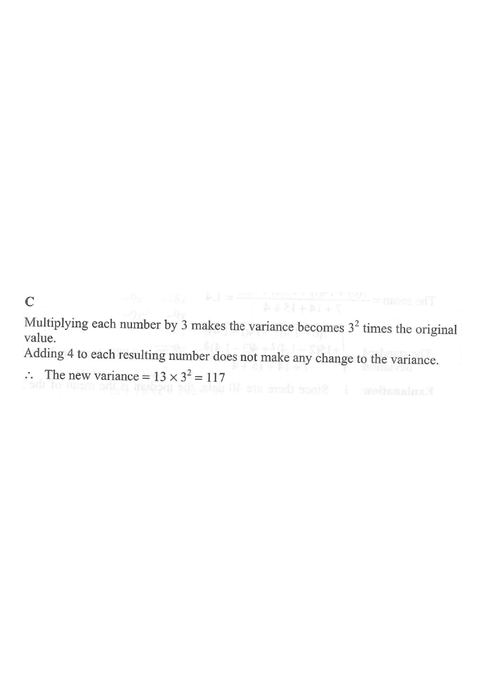

Step 1 — Original five numbers $x_1,\dots,x_5$ have variance 13.
HKDSE 2013 Paper 2 · Q45
If the variance of the five numbers $x_1,\;x_2,\;x_3,\;x_4$ and $x_5$ is $13$, then the variance of the five numbers
$$3x_1+4,\;\;3x_2+4,\;\;3x_3+4,\;\;3x_4+4\;\;\text{and}\;\;3x_5+4$$
is
A. 39.
B. 43.
C. 117.
D. 121.

Figure (original exam diagram)
Step 1Recall the variance rules for a linear transformation.
For a set of data and constants $a,\,b$:
$$\operatorname{Var}(aX+b)=a^{2}\,\operatorname{Var}(X)$$
Adding a constant $b$ shifts every value equally, so the spread (variance) is unchanged — only the multiplier $a$ matters.
Variance of a Linear Transformation\(\operatorname{Var}(aX+b)=a^{2}\operatorname{Var}(X)\)Adding the constant \(4\) shifts every value equally, so only the multiplier \(3\) changes the spread.
Step 2Identify $a$ and $b$.
Each new number is $\;3x_i+4$, so
$$a=3,\qquad b=4,\qquad \operatorname{Var}(X)=13.$$
"$3x_i$" gives the scaling factor; "$+4$" is the shift, which will be ignored.
Linear Transformation of Data\(x_{\text{new}}=a\,x_{\text{old}}+b\)Matching \(3x_{i}+4\) with \(ax+b\) gives \(a=3\), \(b=4\), with \(\operatorname{Var}(X)=13\).
Step 3Apply the scaling rule.
The variance is multiplied by $a^2=3^2=9$:
$$\operatorname{Var}(3X+4)=3^{2}\times 13=9\times 13.$$
The $+4$ changes the mean but not the variance.
Step 4Evaluate.
$$\operatorname{Var}(3X+4)=9\times 13=117.$$
A quick check: $9\times13=117$, which sits between choices A (39) and D (121) — matching choice C.
Careful: multiplying the variance by $3$ instead of $3^2=9$ (giving 39) is the classic trap.
Answer: C — the new variance is $117$.
PRACTICESimilar question — try it yourself
Question. If the variance of the five numbers \(x_{1},\ x_{2},\ x_{3},\ x_{4}\) and \(x_{5}\) is \(8\), find the variance of the five numbers \(5x_{1}-7,\ 5x_{2}-7,\ 5x_{3}-7,\ 5x_{4}-7\) and \(5x_{5}-7\). [1 mark]
Show the worked solution
Step 1. Each new number is \(5x_{i}-7\), so the transformation is \(aX+b\) with \(a=5\) and \(b=-7\).
Step 2. By \(\operatorname{Var}(aX+b)=a^{2}\operatorname{Var}(X)\), the variance is multiplied by \(a^{2}=5^{2}=25\).
Step 3. Hence the new variance is \(25\times 8=200\). The \(-7\) changes the mean only, not the variance.
Step 4. Check the trap: multiplying the variance by \(5\) would give \(40\), but the correct scale factor is \(5^{2}=25\).